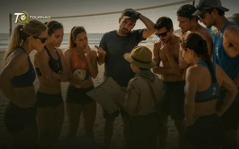
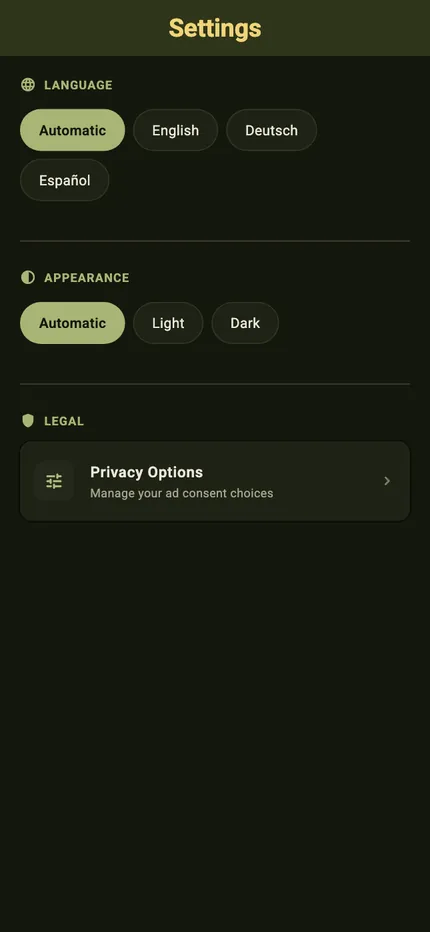
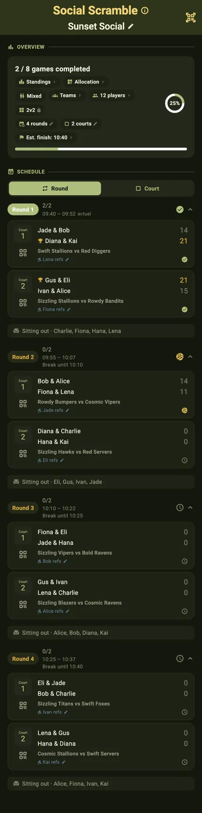
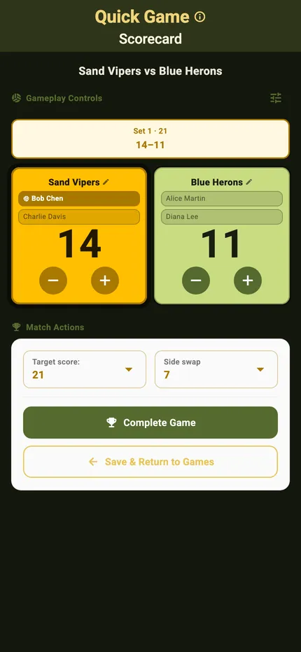

The app shell
Navigation & Settings
Where things are, and the few switches that change how the app looks and speaks. Three cards on the home screen lead into everything the app can do; More holds the screens beside that flow, and Settings holds the language, the appearance and the privacy options. Every screen in this guide exists in both palettes — the dark one is at the bottom of this page, next to its light twin.

TournaQ User GuideThree cards on the home screen, and everything in the app sits under one of them.

Everything you open once, or once a season — none of it needed with a match running.

Advertising and sponsorship pay for the continued development — the screen says so, and then gives you every way to be part of it.

Every way to reach the team, and the documents you occasionally have to look up.

Testing new features before they are released — TestFlight on iOS, the tester program on Android.







